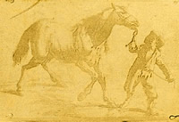
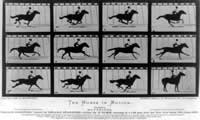

Introduction
To understand the tremendous opportunities that the internet offers as a new storytelling medium, we need to first
begin to think about it as a new “canvas” with its own unique properties, and we need to understand how it is different
than the artistic forms of expression that have preceded it.
This handout provides a brief historical review of the evolution visual storytelling. It focuses specifically on how artists
took advantage of each new technological development in visual expression, but also how each development
– from painting to photography to motion pictures to video games – also dictated the kind of content that is produced.
Thinking about each art form this way will be crucial when we envision the internet as a storytelling canvas
and discuss the best-practices for web-native filmmaking.
Anyone who has ever tried to write a script knows that you cannot write interior thoughts in a screenplay, you can
only what we can see and hear. In a novel, you can write “Tom is hungry” – you can tell us that someone is hungry,
but in a movie you must show us that Tom is hungry: “Tom’s stomach rumbles.” The novel may have the advantage
over the film in sharing interior thoughts, but can written words express the grandeur of Avatar’s visuals? Or express
the depths of Heath Ledger’s unsettling performance as The Joker in The Dark Knight?
Or: Imagine you were given a pad of paper and a pencil and asked to tell a story with it. Now imagine you were
given the same pad but with a set of watercolor paints instead – don’t you think the kind of story you told, and how
you told it, would be different? Now imagine your pad of paper is the internet…
Cave Paintings
Thirty four thousand years ago, in a large cave in
Southern France, an artist used pigment to create some
of the first known paintings. Herds of bison, charging
rhinos, leaping gazelle. The animals – some of them now
extinct - were rendered in startling detail. However, these
were not simply portraits. The animals were interacting
with one another – and interaction is story. The artist
was a storyteller. By using visual means of expression to
recount the artist’s experiences at that moment in time,
we can draw a line between the caves of southern France
and the contemporary stories we see unfolding on our
computer monitors in the present day.
 There is evidence that those early painters struggled
with the limitations of their chosen “canvas” and also
found ways to take advantage of the opportunities their
unique art form provided them. Painters in the Chauvet
caves sanded down the textured walls to have a lighter,
smoother surface upon which to work, and then after the
paintings were completed they etched an outline of the
subject into the stone so that the torchlight would cast
shadows that made the image stand out. In other places, rather than try to disguise the texture or curvature of the
walls, the artists actually incorporated these qualities into their work. A jagged piece of the wall could be used to
represent fur, the sloping lines of a rock race could direct the viewer’s eye to where the artist wanted them to look.
There is evidence that those early painters struggled
with the limitations of their chosen “canvas” and also
found ways to take advantage of the opportunities their
unique art form provided them. Painters in the Chauvet
caves sanded down the textured walls to have a lighter,
smoother surface upon which to work, and then after the
paintings were completed they etched an outline of the
subject into the stone so that the torchlight would cast
shadows that made the image stand out. In other places, rather than try to disguise the texture or curvature of the
walls, the artists actually incorporated these qualities into their work. A jagged piece of the wall could be used to
represent fur, the sloping lines of a rock race could direct the viewer’s eye to where the artist wanted them to look.
So what can we say made the cave wall unique as a medium for visual expression? What are its benefits as a canvas?
What are its limitations? First off, the work of art is singular – you cannot copy a cave wall. Obviously, this also
means you must go to the cave – it isn’t coming to you. While this may seem like a limitation, think about the experience
of standing before something that you know is unique in the world – a building, a sculpture, even a person.
Something that can be copied is more accessible, but for that very reason it also loses some of its magic. Cave
walls are rarely smooth, so you must accommodate the textures and shape of the wall, but they are also not confined
to a specific shape the way a piece of paper or a canvas is. It can take any shape, and it is three-dimensional –
there is freedom, and possibility, that doesn’t exist in the confines of an 8.5x11 sheet of paper.
We could spend time discussing the evolution of painting, the advantages and disadvantages of watercolor vs. oilbased
paint, but you get the point – each medium is unique, each has its strengths and limitations, and our images
and stories are shaped by the medium we choose to express ourselves in. Moving on!
Photography
 The first photographs were taken by a Frenchman named Joseph
Nicephore Niepce in 1827. They were called Heliographs because the
images were etched by rays of light from the sun. Later, photography
would capture an image on a celluloid material – called a negative –
that allowed for the precise duplication of images.
Photography was unique in many ways: it produced art that precisely
replicated the subject, unlike the subjective interpretations of painting
or drawing. It also was produced quickly – the image was captured in
a fraction of a second, and the chemical developing and printing could
be done in hours. Its speed and potential for reproduction made photography
the most important development in visual expression in centuries.
If the benefits of photography were its striking ability to produce what we would consider “life-like” imagery at a
remarkable speed, what were its limitations? As with painting on canvas (and perhaps because of the canvas), a
rectangular frame was quickly agreed upon by purveyors of the art. Once mass-produced cameras embraced the
aspect ratio the rectangle became the format that all photos had to adhere to. Images were also limited to black
and white expression for the first 75 years of photographic history; readily accessible color photography was introduced
to the public in 1903.
Perhaps most importantly, though, the photographic artist also surrendered control over the subject – a painter
could create each aspect of the image as she desired, while a photographer is “stuck” with using what actually exists
in the world. The photograph sacrificed poetry for authenticity.
Motion Pictures & Television
 The first motion picture device is credited to Eadweard
Muybridge, who used a series of cameras to study the
motion of horses in 1877.
Movie cameras built upon the still-image camera’s capacity
for capturing what is perceived as reality. The combination
of photographic fidelity with seamlessly moving
images, along with the invention of the magnetic audio
track and the development of a system of editing by early American filmmaking pioneers like Thomas Edison and D.W, Griffith, resulted in an art form that viewers could engage
on a level of near-hypnosis.
At first, however, storytelling wasn’t considered the domain of the motion picture camera, Early films were basically
long-format still photographs – footage of a baby eating, a train arriving at a station, people leaving work after a long
day at the factory. In the same way that we see the internet as simply an improved version of other media (better
than mail, better than a yellow pages, better than a Thomas Brothers, etc), we first envisioned the motion picture
camera as just a better version of the still camera, rather than its own unique means of artistic expression.
What we would consider the “grammar” of film language – close up shots, reverse shots, continuity editing, special
effects – began to emerge at the turn of the century and by the 1914 had crystallized into something we would
recognize in today’s theatres. And this particular voice, this mode of storytelling that disguises editing and creates a
highly-seductive illusion of continuous time and space, has become the dominant form of visual storytelling on our
planet.
If we identify the unique property of the motion picture storytelling as the ability to create a hypnotic, life-like world
that the viewer gets sucked into, then what are it’s limitations? Well, for much of its history, motion pictures were so
prohibitively expensive to make that few people got to make them, and those that did were severely limited in what
they could do and say by the financial constraints put upon them. In short, movies were expensive to make and had
to make their money back, so they had to follow a very precise, very limiting formula.
As filmmaking equipment became more affordable and accessible, there were more opportunities for artists to
pursue non-commercial storytelling. By the time these opportunities emerged in the 1950s and 1960s (most notably
in the form of smaller 16mm and 8mm film cameras), though, audiences had a long-established expectation of
what a film should look and sound like. The magic of film’s ability to mimic real-life was also a prison: audiences did
not tolerate deviations from that style of storytelling. While we were open minded about impressionist and abstract
painting, we struggled with motion picture expressions that didn’t hold true to the way we saw and heard the world
around us.
A conversation about the developments in motion picture technology and storytelling wouldn’t be complete without
mention of the television revolution. First design in 1926 and implemented in Germany in 1935, the television came
to American in 1941 and by 1959 there were 50 million TV sets in the country.
Television offered a revolutionary means of engagement: changing the channel. This wasn’t available when one
went to the movies – the closest a filmgoer could come to changing the channel was walking out of one theater
and into another. Television also offered live broadcasts, offering a more comprehensive experience than the radio
broadcast. Finally, the content was also endlessly streaming: you could always watch television. These qualities are
both early echoes of the interaction we see with the internet today.
If film form was limiting in its scope and language, though, television was far more so. Deeply-rooted financial pressures
and rigorously adhered-to schedules (24 minutes for a half-hour slot, 44 minutes for an hour slot, etc) made
television highly formulaic and limited in storytelling opportunities.
Video Games
 The first video game is widely recognized as “Cathode Ray Tube Amusement Device”, an extremely basic one-player
proto-Missile Command devised in 1947 for an analog computer. Fifty years later, video games would surpass motion
pictures as the high-grossing visual-storytelling medium on the planet.
The first video game is widely recognized as “Cathode Ray Tube Amusement Device”, an extremely basic one-player
proto-Missile Command devised in 1947 for an analog computer. Fifty years later, video games would surpass motion
pictures as the high-grossing visual-storytelling medium on the planet.
While television gave you the opportunity to change the channel from one story to another, video games offered the
opportunity to actually change and even create the content of the story. Most story-based video games still operate on a largely linear path with a set outcome, the gettingthere
is going to be unique for each “user” (and note the
distinction between “viewers” and “users” – what do we
call people who engage with web-native films?) And while
video games may have lacked the life-like image quality
of films, they made up for it in interactivity and identification:
having an avatar – a graphic representation of the
user – that responded to her commands.
Interactive storytelling is becoming increasingly common
in our society. Consoles like the Wii have made gaming
more accessible to broader communities. The passivity
of the motion picture experience is being challenged by
the interactivity of the gaming console. Again, we can see
echoes of the internet in the degree to which the user or
viewer can dictate the terms of engagement with the story.